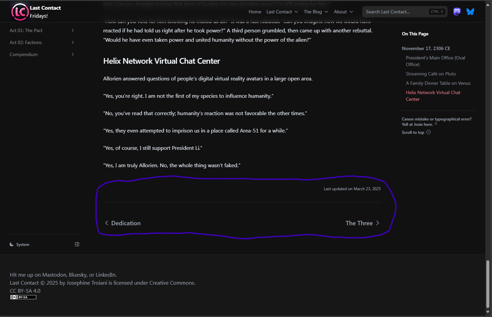
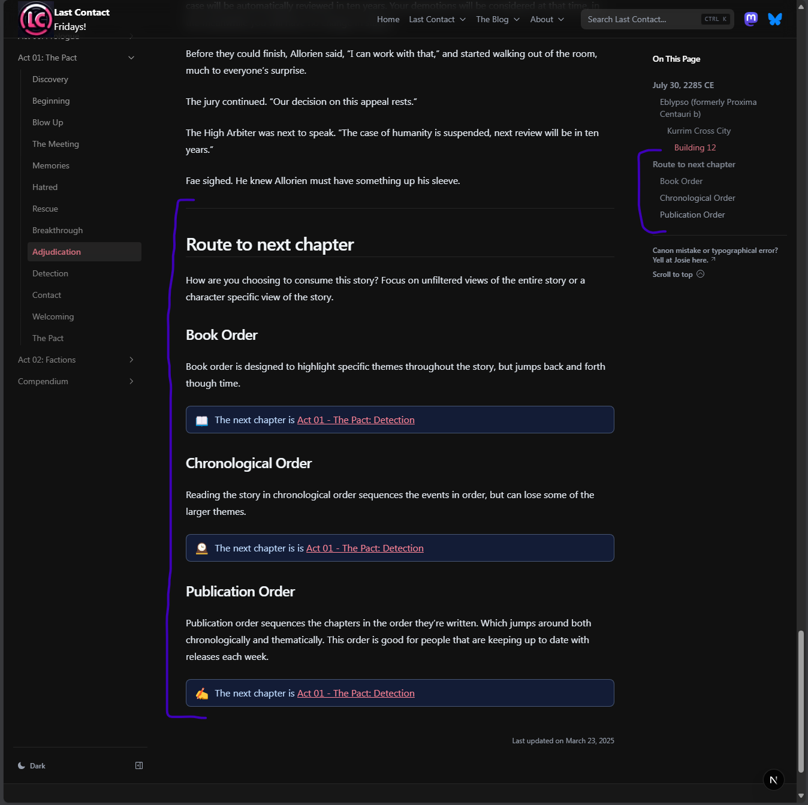
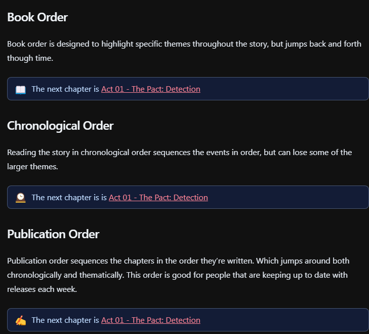
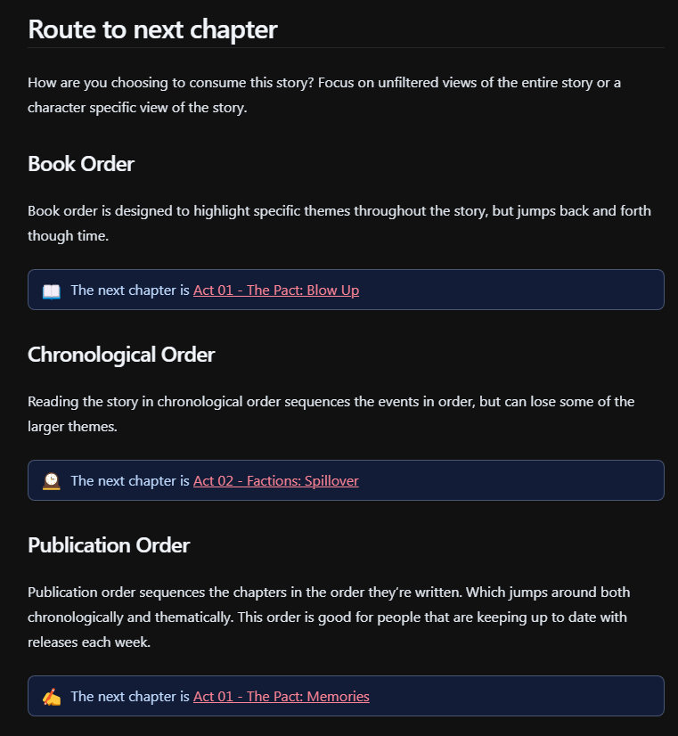
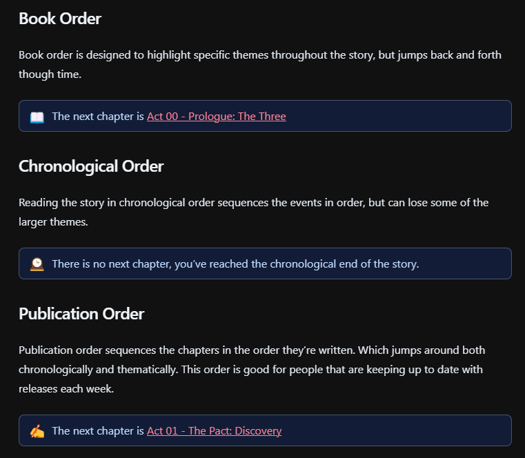
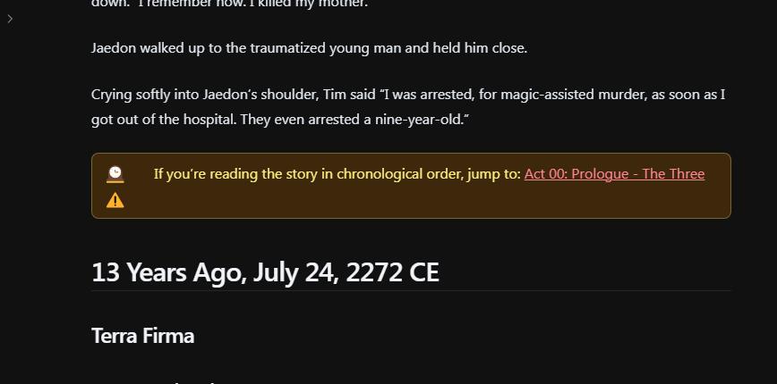

Well, I realized a limitation in the navigation of the site. There was only one real effective way to read the site -- in the order that it is if it were in a book.
The old navigation was at the bottom of the page and had a "previous" and "next link" but it was locked into the order the chapters appeared on the sidebar.
For the chapter in the screenshot below (Acknowledgement) you can see the previous chapter is Dedication and next chapter is The Three, which is exactly how it appears in the sidebar. While this navigation is helpful it is only one way to read Last Contact, the book as if you were reading a physical book. I want the book to be much more a choose your own adventure type of thing where you can navigate freely though the content...

A screenshot of the old navigation capturing the single type of navigation
At the end of each chapter now will appear banners that indicate what the next chapter is in the certain "path." I've developed three paths with more more minor optional paths to come but these are the first three.
Here's a screenshot of what it looks like at the bottom of a chapter, and it also now shows in the table of contents of each chapter so you can jump around if you want to.

A screenshot of the new navigation where all the destinations are the same chapter.
Book (Act) Order
Book order is designed to highlight specific themes throughout the story, but jumps back and forth though time. This order will match the sidebar of the website and will match the "next" chapter in the old navigation system. As I release new chapters they will get inserted into this order wherever they actually go. If you were reading a book this is the path that would be used if you read all pages in order after all of them were published together as one unit. It will show as banners with little book emoji.
Chronological Order
Reading the story in chronological order sequences the events in order by calendar, but can lose some of the larger themes. If you were reading a book this would represent jumping forward and backward though the book to read things in the order they occurred based on headers on the chapters. As I release new chapters they will get inserted into this order wherever they actually go. There was a way to do this before but it meant jumping back and forth to the timeline between every chapter. It will show at the end of each chapter as banners with clock emoji. Sometimes there will be a chronological banner in the middle of a chapter because the chapter itself is jumping though time.
Publication Order
Publication order sequences the chapters in the order they're written. Which jumps around both chronologically and thematically. This order is new and has not been able to replicated before. As a release new chapters they get added to the *end* of this order. If you're caught up with me and reading as I release this order is the most effective way to "keep up" without rereading or having to figure out which chapters are new.
Here's a screenshot of what it looks like at the bottom of a chapter, and it also now shows in the table of contents of each chapter so you can jump around if you want to.
Sometimes all the routes go to the same place
Interestingly enough, in that particular chapter no matter which way you're reading it the chapter called Adjudication always goes to the chapter called Detection.

Zoomed in screenshot of the new navigation always going to the same chapter
Sometimes they all go to different places
Here's a screenshot from the chapter called Beginning where all three routes go different places.

Zoomed in screenshot of the new navigation always going to different chapters
Sometimes there's a dead end
Here's a screenshot from the chapter Acknowledgement. The interesting note here is that the middle route (chronological) dead ends because this chapter represents the latest chapter chronologically and therefore the story ends

Screenshot indicating the chronological route dead ends
Sometimes there's an inline rerouting
There are also some rare times where the routing will change in the middle of a chapter. This usually occurs due to the chapter itself jumping around chronologically. Those banners exist inline with the text just before the time jump and are a different color and include a warning icon in addition to the route icon. Here's a screenshot from the chapter "The Three"

Screenshot indicating the chronological route jumps even though the text in the chapter keeps going.